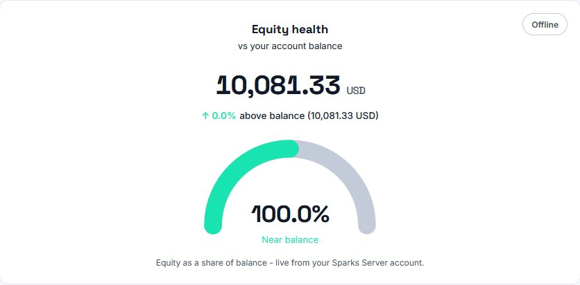
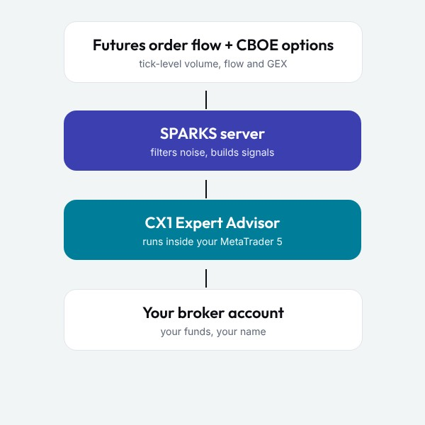
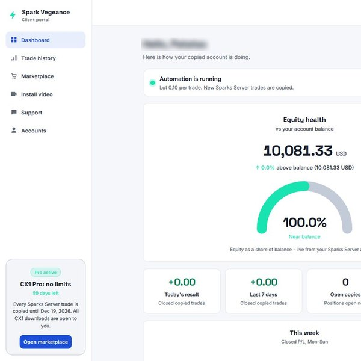

Market research meets automation
Sparks Vegeance builds CX1, a trade copier for MetaTrader 5. Our own servers read institutional order flow and options positioning, and CX1 mirrors the result on your account in real time.
We turn market structure into systematic execution
Order flow, CBOE options positioning and structural context are processed on Sparks Vegeance servers, then delivered to the CX1 Expert Advisor on your MT5 terminal.
Data from the source
Raw futures order flow and CBOE options data, not broker CFD prices.
Expand
Most retail charts are built on off-exchange CFD pricing. Sparks Vegeance ingests centralized futures and options data directly, so the signals reflect where real orders sit.
- Futures volume and aggressor trades
- Options volume, sweeps and open interest
- Gamma exposure (GEX) levels
Our own server infrastructure
In-house, bare-metal servers built and maintained by the team.
Expand
The pipeline runs on physical machines we own, with UPS power, a failover network line and 24/7 monitoring, so there is no shared cloud hypervisor between the data and your trade.
Execution on your own account
CX1 runs in your MT5 terminal. Your money stays with your broker.
Expand
CX1 mirrors trades on your account with your broker. Sparks Vegeance never holds, pools or manages client funds, and a built-in loss limit can pause copying when you say stop.
How CX1 works
Four steps from our servers to a position on your account.
We read the market
Servers ingest futures order flow and CBOE options data continuously.
We filter the noise
Spoofing, phantom liquidity and low-liquidity moves are removed before anything is sent.
The signal is dispatched
Execution parameters go to your CX1 EA over an encrypted connection.
CX1 executes locally
Your MT5 terminal opens, changes and closes the trade on your account.
Built around risk first
Position size, loss limits and exits are handled before a trade is ever opened, and you stay in control from the client portal.
- Risk per trade from account equity and volatility
- Daily and maximum loss limits that pause copying
- Trailing stops and partial profit schedules
- A live risk meter and trade history in the portal

Learn more about Sparks Vegeance
Products, technology and the thinking behind them.

CX1 Free, Lite and Pro

Bare-metal infrastructure for precise execution
Real data over broker noise

The five founders behind Sparks Vegeance
Frequently asked questions
What is Sparks Vegeance?
Sparks Vegeance is an independent trading technology and research project. We run our own server infrastructure that processes order flow and options data, and we deliver the result to your MetaTrader 5 account through the CX1 Expert Advisor.
Is Sparks Vegeance a broker or a fund manager?
No. Sparks Vegeance sells software and access to a client portal. We never hold, pool or manage your money. Your funds stay with your own broker, in an account in your own name.
Which platform does CX1 run on?
CX1 is an Expert Advisor for MetaTrader 5 (MT5). It runs on your own computer or VPS, inside your own MT5 terminal.
Is there a free version?
Yes. CX1 Free copies up to 3 trades per week so you can see how it works. CX1 Lite gives unlimited copying for 15 days and CX1 Pro gives unlimited copying for one month. Lite and Pro are paid plans; prices are shown in the client portal.
Can Sparks Vegeance guarantee profits?
No. Trading carries a high risk of loss and no software can remove it. Read the risk warning at the bottom of every page before you trade.
How do I get started?
Create a free account in the client portal, download CX1 from the Marketplace, copy it into your MT5 Experts folder, allow WebRequest for the Sparks Vegeance server, and enter your MT5 account number in the portal.
Start free. Upgrade when you are ready.
CX1 Free copies up to three trades a week so you can check the setup on your own MT5 account. CX1 Lite and CX1 Pro remove the limit for 15 days or one month.
Compare plans